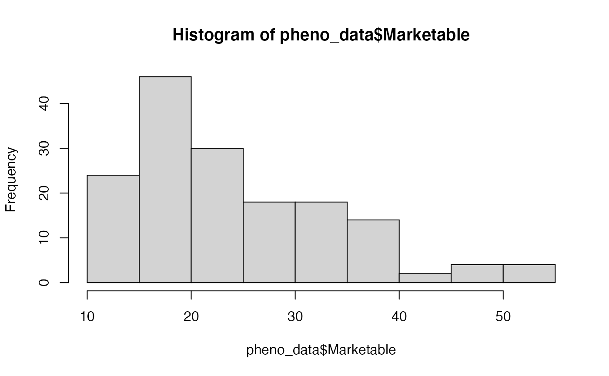
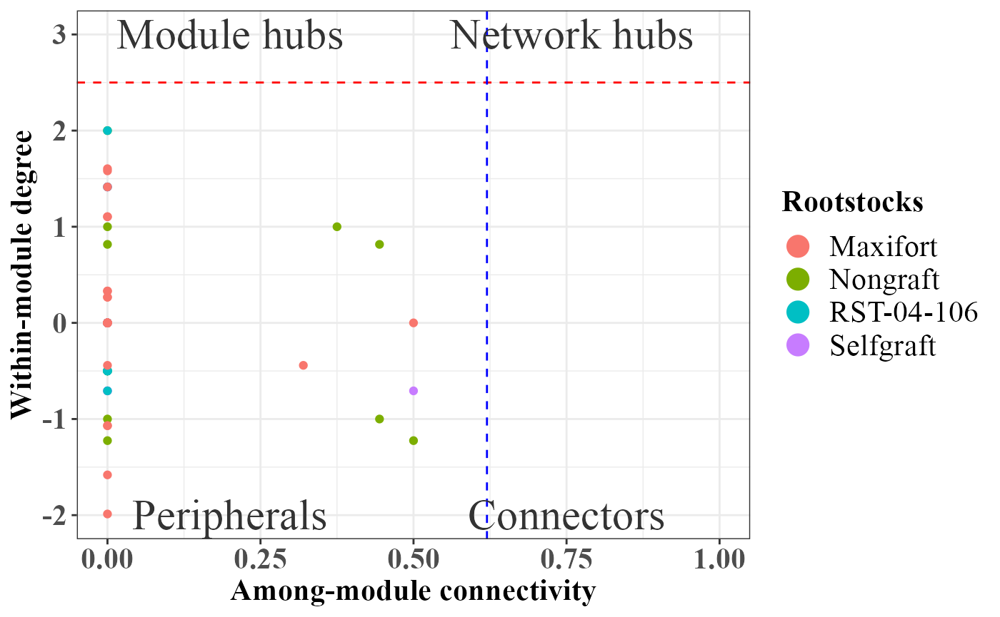

PhONA-manuscript
Ravin Poudel
2021-08-13
PhONA-manuscript.Rmd
# GLOBAL VARIABLE
ITERS=5
OTU_OTU_PVALUE = 0.05
OTU_OTU_RVALUE = 0.5
OTU_PHENOTYPE_PVALUE = 1
###### Load the data
otu_data_fungi <- read.mothur.shared("data/Fungi1415_trim.contigs.trim.unique.precluster.pick.pick.subsample.nn.unique_list.shared")
rownames(otu_data_fungi) <- paste0("F", rownames(otu_data_fungi))
# upload meta data file
bigmetadata <- read.csv("data/block_diversity_selected_tunnel_ww.csv", header = T, row.names = 1, stringsAsFactors = FALSE)
rownames(bigmetadata) <- paste0("F", rownames(bigmetadata))
### select otu_data based on metadata
otu_data <- otu_data_fungi[rownames(bigmetadata), ]
dim(otu_data)## [1] 160 16151## [1] 160 16151
# now select metadata based on od
meta_data <- bigmetadata[rownames(otu_data), , drop = FALSE]
all.equal(row.names(meta_data), row.names(otu_data))## [1] TRUE
# upload taxanomy file
tax_fungi <- read.mothur.taxonomy("data/Fungi1415_trim.contigs.trim.unique.precluster.pick.pick.subsample.nn.unique_list.0.03.cons.taxonomy")
# checking if taxonomy file and count files have same otus
all.equal(colnames(otu_data), row.names(tax_fungi))## [1] TRUE
#
########## read in phenome data/ Yield data
# read in data
pheno_data <- read.csv("data/tomato_yield.csv", header = TRUE, stringsAsFactors = FALSE, row.names = 1)
rownames(pheno_data) <- paste0("F", rownames(pheno_data))
hist(pheno_data$Marketable)
pheno_data_mean <- aggregate(pheno_data$Marketable, by=list(Rootstock=pheno_data$Rootstock), FUN=mean)
pheno_data_sel <- pheno_data %>%
select(Rootstock, Compartment, Marketable, Study_site, Year, Sample_name)
meta_withpheo = inner_join(meta_data, pheno_data_sel)## Joining, by = c("Rootstock", "Compartment", "Study_site", "Year", "Sample_name")
rownames(meta_withpheo)<- rownames(meta_data)
# create a phyloseq object~ can combine count, metadata, taxonomy, and phylogentic tree.
tax.mat <- tax_table(as.matrix(tax_fungi))
otu.mat = otu_table(t(otu_data), taxa_are_rows = TRUE)
sample.mat <- sample_data(meta_withpheo)
physeq = phyloseq(otu.mat, tax.mat, sample.mat)
## Assign color to the taxa on the whole phyloseq object so that the same color is assigned for a taxon across treatments
physeq = taxacolor(phyobj = physeq, coloredby = "Phylum")
physeq## phyloseq-class experiment-level object
## otu_table() OTU Table: [ 16151 taxa and 160 samples ]
## sample_data() Sample Data: [ 160 samples by 10 sample variables ]
## tax_table() Taxonomy Table: [ 16151 taxa by 9 taxonomic ranks ]At this point we have a phyloseq object for all the treatments. Now, we will process the phyloseq object the split it by treatment combinations.
#### All the combinations of treatment factor
region <- unique(as.character(data.frame(sample_data(physeq))$Compartment))
region## [1] "Rhizosphere" "Endosphere"
treatment <- unique(as.character(data.frame(sample_data(physeq))$Rootstock))
treatment## [1] "Selfgraft" "RST-04-106" "Nongraft" "Maxifort"Getting phyloseq object for endosphere
# Endosphere
ng_endo <- subset_samples(physeq, c(Compartment =="Endosphere" & Rootstock=="Nongraft")) %>%
prune_taxa(taxa_sums(.) > 2, .)
# Inputfile for running SparCC
ng_endo_sparcc = otu_table(ng_endo)
write.table(data.frame(OTU_id = rownames(ng_endo_sparcc), ng_endo_sparcc), file = "data/sparcc_data/ng_endo_sparcc.txt", sep = "\t", row.names = FALSE, quote = FALSE)
sg_endo <- subset_samples(physeq, c(Compartment =="Endosphere" & Rootstock=="Selfgraft")) %>%
prune_taxa(taxa_sums(.) > 2, .)
# Inputfile for running SparCC
sg_endo_sparcc = otu_table(sg_endo)
write.table(data.frame(OTU_id = rownames(sg_endo_sparcc), sg_endo_sparcc), file = "data/sparcc_data/sg_endo_sparcc.txt", sep = "\t", row.names = FALSE, quote = FALSE)
rst_endo <- subset_samples(physeq, c(Compartment =="Endosphere" & Rootstock=="RST-04-106")) %>%
prune_taxa(taxa_sums(.) > 2, .)
# Inputfile for running SparCC
rst_endo_sparcc = otu_table(rst_endo)
write.table(data.frame(OTU_id = rownames(rst_endo_sparcc), rst_endo_sparcc), file = "data/sparcc_data/rst_endo_sparcc.txt", sep = "\t", row.names = FALSE, quote = FALSE)
maxi_endo <- subset_samples(physeq, c(Compartment =="Endosphere" & Rootstock=="Maxifort")) %>%
prune_taxa(taxa_sums(.) > 2, .)
# Inputfile for running SparCC
maxi_endo_sparcc = otu_table(maxi_endo)
write.table(data.frame(OTU_id = rownames(maxi_endo_sparcc), maxi_endo_sparcc), file = "data/sparcc_data/maxi_endo_sparcc.txt", sep = "\t", row.names = FALSE, quote = FALSE)Getting phyloseq object for rhizosphere
# Rhizosphere
ng_rhizo <- subset_samples(physeq, c(Compartment =="Rhizosphere" & Rootstock=="Nongraft")) %>%
prune_taxa(taxa_sums(.) > 2, .)
# Inputfile for running SparCC
ng_rhizo_sparcc = otu_table(ng_rhizo)
write.table(data.frame(OTU_id = rownames(ng_rhizo_sparcc), ng_rhizo_sparcc), file = "data/sparcc_data/ng_rhizo_sparcc.txt", sep = "\t", row.names = FALSE, quote = FALSE)
sg_rhizo <- subset_samples(physeq, c(Compartment =="Rhizosphere" & Rootstock=="Selfgraft")) %>%
prune_taxa(taxa_sums(.) > 2, .)
# Inputfile for running SparCC
sg_rhizo_sparcc = otu_table(sg_rhizo)
write.table(data.frame(OTU_id = rownames(sg_rhizo_sparcc), sg_rhizo_sparcc), file = "data/sparcc_data/sg_rhizo_sparcc.txt", sep = "\t", row.names = FALSE, quote = FALSE)
rst_rhizo <- subset_samples(physeq, c(Compartment =="Rhizosphere" & Rootstock=="RST-04-106"))%>%
prune_taxa(taxa_sums(.) > 2, .)
# Inputfile for running SparCC
rst_rhizo_sparcc = otu_table(rst_rhizo)
write.table(data.frame(OTU_id = rownames(rst_rhizo_sparcc), rst_rhizo_sparcc), file = "data/sparcc_data/rst_rhizo_sparcc.txt", sep = "\t", row.names = FALSE, quote = FALSE)
maxi_rhizo <- subset_samples(physeq, c(Compartment =="Rhizosphere" & Rootstock=="Maxifort")) %>%
prune_taxa(taxa_sums(.) > 2, .)
# Inputfile for running SparCC
maxi_rhizo_sparcc = otu_table(maxi_rhizo)
write.table(data.frame(OTU_id = rownames(maxi_rhizo_sparcc), maxi_rhizo_sparcc), file = "data/sparcc_data/maxi_rhizo_sparcc.txt", sep = "\t", row.names = FALSE, quote = FALSE)Read in output from sparcc, then run SparCC.
Nongraft and Endosphere
ng_endo_sparcc.cor <- read.delim("data/sparcc_output/Endosphere_Nongraft_cor_sparcc.out", sep = "\t", header = T, row.names = 1)
ng_endo_sparcc.pval <- read.delim("data/sparcc_output/Endosphere_Nongraft_pvals.two_sided.txt", sep = "\t", header = T, row.names = 1)
phona_ng_endo <- PhONA(physeqobj = ng_endo, cordata = ng_endo_sparcc.cor,
pdata = ng_endo_sparcc.pval, model = "lasso",
iters = ITERS, defineTreatment = "Nongraft",nodesize = 5,
PhenoNodesize = 12, definePhenotype = "Marketable", PhenoNodelabel = "Nongraft")## Total number of iterations used: 5
Selfgraft and Endosphere
sg_endo_sparcc.cor <- read.delim("data/sparcc_output/Endosphere_Selfgraft_cor_sparcc.out", sep = "\t", header = T, row.names = 1)
sg_endo_sparcc.pval <- read.delim("data/sparcc_output/Endosphere_Selfgraft_pvals.two_sided.txt", sep = "\t", header = T, row.names = 1)
phona_sg_endo <-PhONA(physeqobj = sg_endo, cordata = sg_endo_sparcc.cor,
pdata = sg_endo_sparcc.pval, model = "lasso",
iters = ITERS, defineTreatment = "Selfgraft",nodesize = 5,
PhenoNodesize = 12, definePhenotype = "Marketable", PhenoNodelabel = "Selfgraft")## Total number of iterations used: 5
RST-04-106 and Endosphere
rst_endo_sparcc.cor <- read.delim("data/sparcc_output/Endosphere_RST-04-106_cor_sparcc.out", sep = "\t", header = T, row.names = 1)
rst_endo_sparcc.pval <- read.delim("data/sparcc_output/Endosphere_RST-04-106_pvals.two_sided.txt", sep = "\t", header = T, row.names = 1)
phona_rst_endo <-PhONA(physeqobj = rst_endo, cordata = rst_endo_sparcc.cor,
pdata = rst_endo_sparcc.pval, model = "lasso",
iters = ITERS, defineTreatment = "RST-04-106",nodesize = 5,
PhenoNodesize = 12, definePhenotype = "Marketable", PhenoNodelabel = "RST-04-106")## Total number of iterations used: 5
Maxifort and Endosphere
maxi_endo_sparcc.cor <- read.delim("data/sparcc_output/Endosphere_Maxifort_cor_sparcc.out", sep = "\t", header = T, row.names = 1)
maxi_endo_sparcc.pval <- read.delim("data/sparcc_output/Endosphere_Maxifort_pvals.two_sided.txt", sep = "\t", header = T, row.names = 1)
phona_maxi_endo <-PhONA(physeqobj = maxi_endo, cordata = maxi_endo_sparcc.cor,
pdata = maxi_endo_sparcc.pval, model = "lasso",
iters = ITERS, defineTreatment = "Maxifort",nodesize = 5,
PhenoNodesize = 12, definePhenotype = "Marketable", PhenoNodelabel = "Maxifort")## Total number of iterations used: 5
Nongraft and Rhizosphere
ng_rhizo_sparcc.cor <- read.delim("data/sparcc_output/Rhizosphere_Nongraft_cor_sparcc.out", sep = "\t", header = T, row.names = 1)
ng_rhizo_sparcc.pval <- read.delim("data/sparcc_output/Rhizosphere_Nongraft_pvals.two_sided.txt", sep = "\t", header = T, row.names = 1)
phona_ng_rhizo <- PhONA(physeqobj = ng_rhizo, cordata = ng_rhizo_sparcc.cor,
pdata = ng_rhizo_sparcc.pval, model = "lasso",
iters = ITERS, defineTreatment = "Nongraft",nodesize = 5,
PhenoNodesize = 12, definePhenotype = "Marketable", PhenoNodelabel = "Nongraft")## Total number of iterations used: 5
Selfgraft and Rhizosphere
sg_rhizo_sparcc.cor <- read.delim("data/sparcc_output/Rhizosphere_Selfgraft_cor_sparcc.out", sep = "\t", header = T, row.names = 1)
sg_rhizo_sparcc.pval <- read.delim("data/sparcc_output/Rhizosphere_Selfgraft_pvals.two_sided.txt", sep = "\t", header = T, row.names = 1)
phona_sg_rhizo <- PhONA(physeqobj = sg_rhizo, cordata = sg_rhizo_sparcc.cor,
pdata = sg_rhizo_sparcc.pval, model = "lasso",
iters = ITERS, defineTreatment = "Selfgraft",nodesize = 5,
PhenoNodesize = 12, definePhenotype = "Marketable", PhenoNodelabel = "Selfgraft")## Total number of iterations used: 5
RST-04-106 and Rhizosphere
rst_rhizo_sparcc.cor <- read.delim("data/sparcc_output/Rhizosphere_RST-04-106_cor_sparcc.out", sep = "\t", header = T, row.names = 1)
rst_rhizo_sparcc.pval <- read.delim("data/sparcc_output/Rhizosphere_RST-04-106_pvals.two_sided.txt", sep = "\t", header = T, row.names = 1)
phona_rst_rhizo <- PhONA(physeqobj = rst_rhizo, cordata = rst_rhizo_sparcc.cor,
pdata = rst_rhizo_sparcc.pval, model = "lasso",
iters = ITERS, defineTreatment = "RST-04-106",nodesize = 5,
PhenoNodesize = 12, definePhenotype = "Marketable", PhenoNodelabel = "RST-04-106")## Total number of iterations used: 5
Maxifort and Rhizosphere
maxi_rhizo_sparcc.cor <- read.delim("data/sparcc_output/Rhizosphere_Maxifort_cor_sparcc.out", sep = "\t", header = T, row.names = 1)
maxi_rhizo_sparcc.pval <- read.delim("data/sparcc_output/Rhizosphere_Maxifort_pvals.two_sided.txt", sep = "\t", header = T, row.names = 1)
phona_maxi_rhizo <- PhONA(physeqobj = maxi_rhizo, cordata = maxi_rhizo_sparcc.cor,
pdata = maxi_rhizo_sparcc.pval, model = "lasso",
defineTreatment = "Maxifort",nodesize = 5,
iters = ITERS, PhenoNodesize = 12, definePhenotype = "Marketable", PhenoNodelabel = "Maxifort")## Total number of iterations used: 5
Role analyses using SA algorithm as implemented in rnetcarto package.
Endosphere
# Endosphere
role_df_Endosphere <- rbind(phona_ng_endo$roles,
phona_sg_endo$roles,
phona_rst_endo$roles,
phona_maxi_endo$roles)
rolePlot(role_df_Endosphere)
If you are not happy with the plot, you can pass any ggplot paramters to rolePlot function.
rolePlot(role_df_Endosphere) +
scale_color_manual(breaks= c("Nongraft", "Selfgraft", "RST-04-106", "Maxifort"),values = c("mediumaquamarine","sienna4","#ffae19","blueviolet"))Rhizosphere
# Endosphere
role_df_Rhizosphere <- rbind(phona_ng_rhizo$roles,
phona_sg_rhizo$roles,
phona_rst_rhizo$roles,
phona_maxi_rhizo$roles)
rolePlot(role_df_Rhizosphere) +
scale_color_manual(breaks= c("Nongraft", "Selfgraft", "RST-04-106", "Maxifort"),values = c("mediumaquamarine","sienna4","#ffae19","blueviolet"))
Summary of all the graphs:
Endosphere
summary_graph_endo_df <- rbind(phona_ng_endo$graph_summary,
phona_sg_endo$graph_summary,
phona_rst_endo$graph_summary,
phona_maxi_endo$graph_summary)
kable(summary_graph_endo_df)| node | edge | nodeDegree | avgpath | trans | mod | connectance | wtc | nModules.SA | top3hub | top3hubv | n_postiveL | n_negativeL | Treatment |
|---|---|---|---|---|---|---|---|---|---|---|---|---|---|
| 16 | 17 | 1.062 | 1.978 | 0.513 | 0.547 | 0.066 | 5 | 3 | 12;15;13 | 1;0.885;0.822 | 14 | 1 | Nongraft |
| 15 | 12 | 0.800 | 1.909 | 0.600 | 0.694 | 0.053 | 5 | 5 | 5;11;12 | 1;1;1 | 10 | 0 | Selfgraft |
| 15 | 12 | 0.800 | 1.294 | 0.815 | 0.653 | 0.053 | 6 | 4 | 12;8;10 | 1;0.64;0.64 | 11 | 0 | RST-04-106 |
| 28 | 37 | 1.321 | 1.615 | 0.749 | 0.700 | 0.047 | 8 | 6 | 7;15;8 | 1;1;0.93 | 26 | 10 | Maxifort |
Rhizosphere
summary_graph_rhizo_df <- rbind(phona_ng_rhizo$graph_summary,
phona_sg_rhizo$graph_summary,
phona_rst_rhizo$graph_summary,
phona_maxi_rhizo$graph_summary)
kable(summary_graph_rhizo_df)| node | edge | nodeDegree | avgpath | trans | mod | connectance | wtc | nModules.SA | top3hub | top3hubv | n_postiveL | n_negativeL | Treatment |
|---|---|---|---|---|---|---|---|---|---|---|---|---|---|
| 43 | 69 | 1.605 | 3.206 | 0.367 | 0.633 | 0.037 | 7 | 7 | 12;18;22 | 1;0.719;0.711 | 48 | 15 | Nongraft |
| 29 | 39 | 1.345 | 5.865 | 0.374 | 0.627 | 0.046 | 5 | 5 | 10;6;5 | 1;0.819;0.815 | 30 | 6 | Selfgraft |
| 35 | 45 | 1.286 | 2.140 | 0.642 | 0.679 | 0.037 | 10 | 7 | 20;26;15 | 1;1;0.866 | 35 | 9 | RST-04-106 |
| 61 | 180 | 2.951 | 3.102 | 0.591 | 0.349 | 0.048 | 9 | 7 | 39;23;24 | 1;0.932;0.897 | 107 | 69 | Maxifort |